Diagnosing Coronal Heating using Computed Tomography
Imaging Spectroscopy
International Space Science Institute
Why Do We Still Have a “Coronal Heating Problem” working group
Roy T. Smart, Charles C. Kankelborg, and Jacob D. Parker
False-color IRIS Spectroheliogram
Si IV 1394 A
320-step dense raster
50 minutes per frame
Good FOV, but not temporally resolved
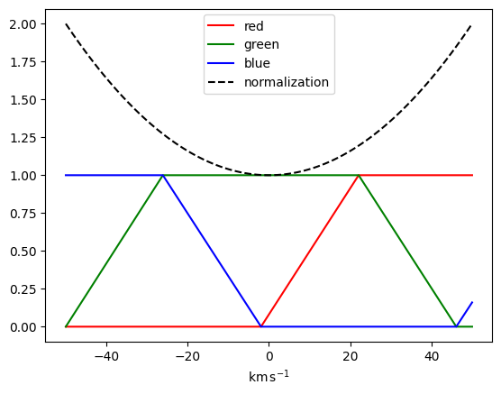
Another false-color IRIS spectroheliogram
Si IV 1394 A
AR 13449
16-step sparse raster
84 seconds per frame
Poor FOV, still not temporally-resolved
What could we be missing?
IRIS slit-jaw movie
C II 1330 A
Sit-and-stare program
AR 13450
0.15 seconds per frame

The EUV Snapshot Imaging Spectrograph (ESIS)
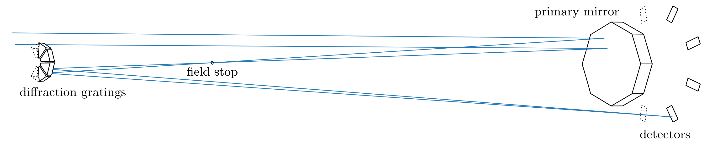
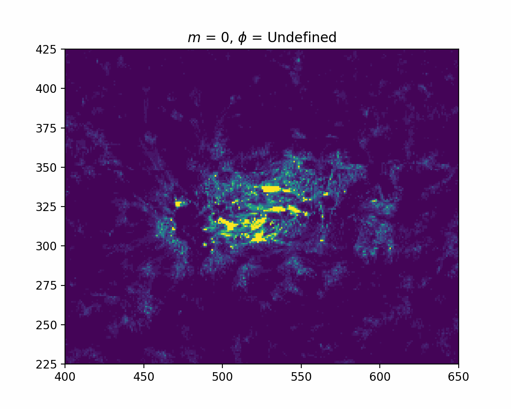

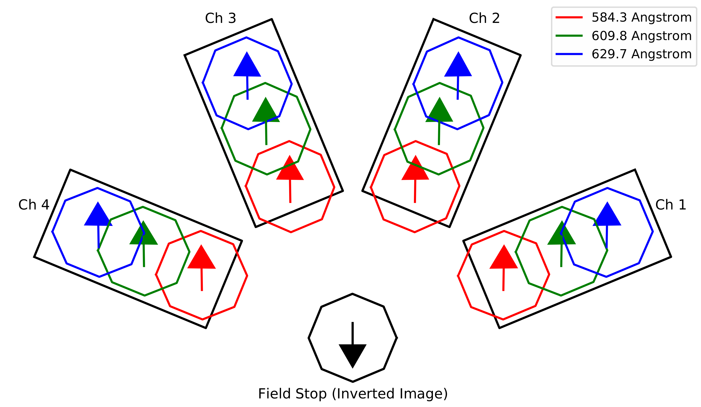
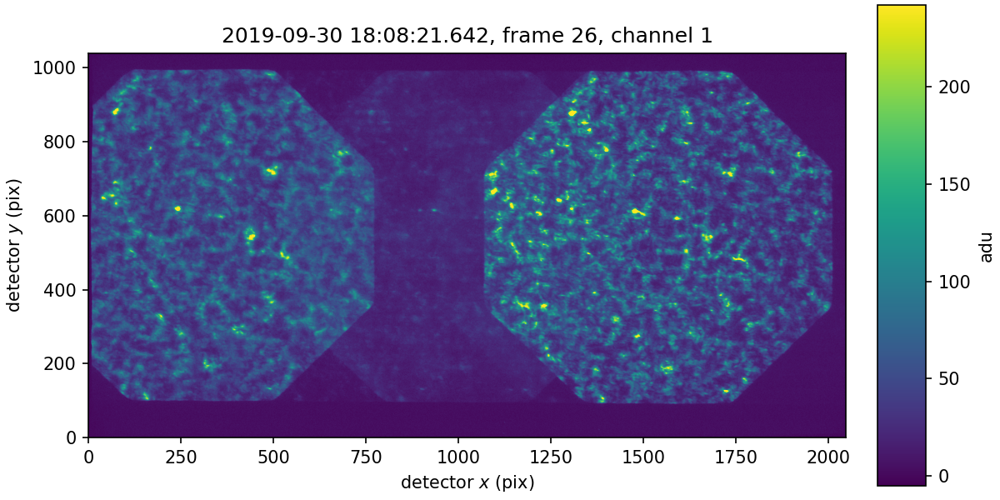
Computed Tomography Imaging Spectroscopy (CTIS) with ESIS
ESIS difference image
O V 630 A
Difference of Channels 2 and 3
Continuous explosive event activity over 5 minutes
Event E
Cotemporal AIA movies
Potential minifilament eruption
Complicated spectral morphology
ESIS Inversions
Analogue of a tomographic inversion problem
Spatial/spectral ambiguity
Limited number of angles


Multiplicative Algebraic Reconstruction Technique (MART) Inversion
Event C
Red/blue shifts are not cospatial or cotemporal
Another MART Inversion
Event D
Convolutional Neural Network inversion technique
Training/validation dataset
IRIS Si IV 1394 A 320-step dense rasters
Rebinned to ESIS resolution
64 training / 17 validation examples
Network Architecture
Fully-convolutional network
2 convolutional + 2 deconvolutional layers
11x11x11 kernel size
32 filters per layer
Left: Original IRIS spectrum (scaled to avg. O V width)
Right: IRIS spectrum rebinned to ESIS resolution
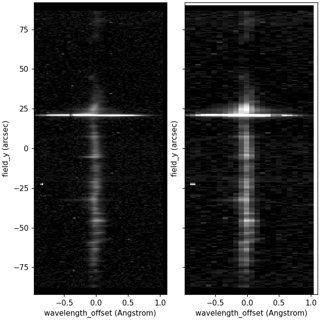
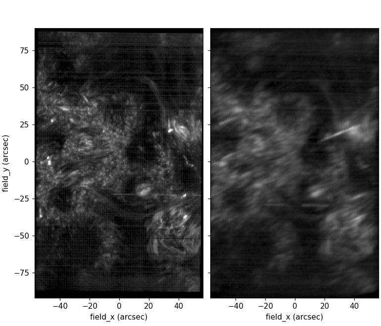
Left: Spectrally-integrated IRIS raster, rebinned to ESIS resolution (ground truth)
Right: Synthetic ESIS observation calculated from the original IRIS raster
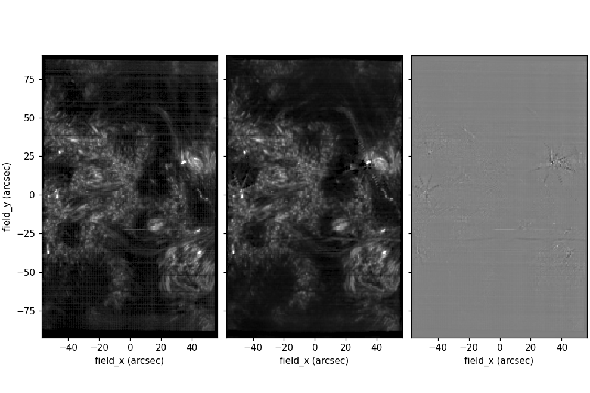
Ground truth (left), reconstructed (middle), difference (right)
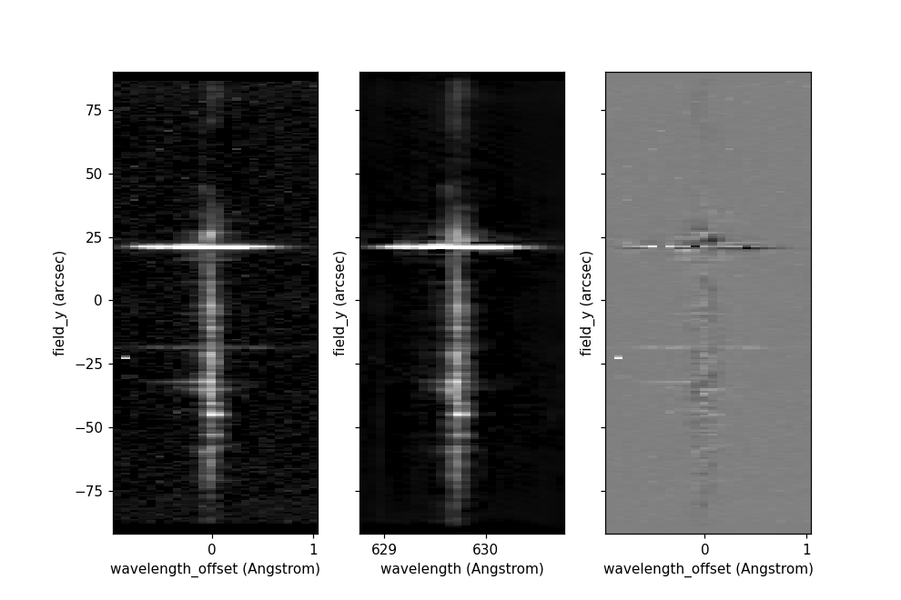
Ground truth (left), reconstructed (middle), difference (right)
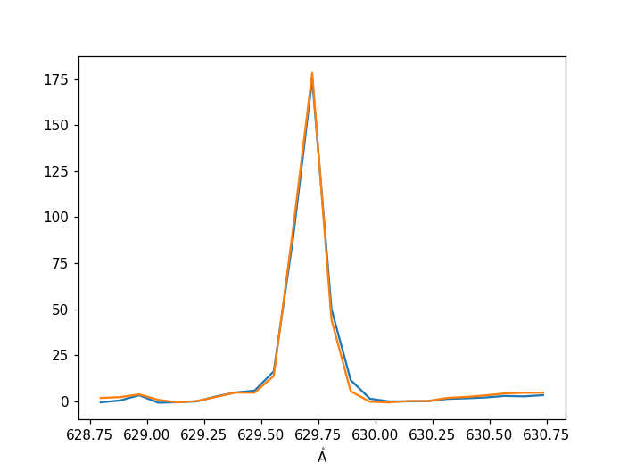
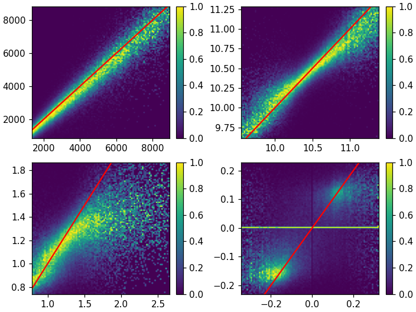
Left: first four true moments vs. reconstructed moments
Right: Average validation spectrum (blue), average reconstructed spectrum (orange)
How can we leverage this observational capability to address the coronal heating problem?
Are there any observational signatures of nanoflares or waves that we be easier to detect over a wide FOV?
What line(s) should we observe?
What cadence, FOV, and resolution would be necessary?